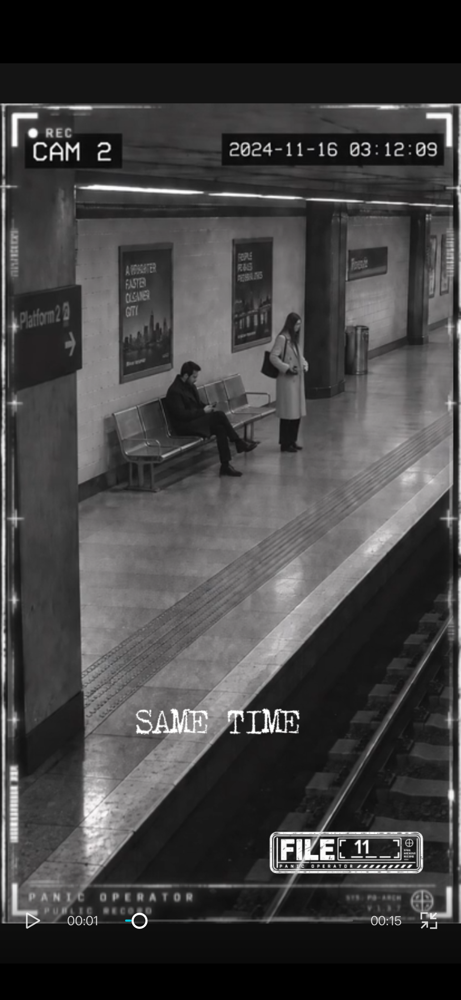
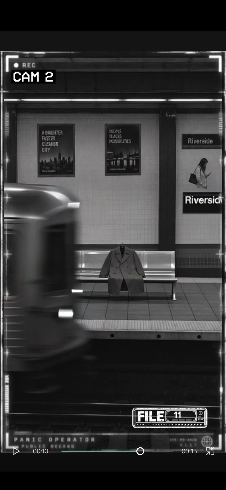

PANIC OPERATOR ARCHIVE
The Two Cameras
Public fragment / FILE 011
This page holds the short public fragment: the recovered clip, two selected stills, and operator notes. The complete record, all five plates, and the archive close remain in the sealed tray on Patreon.
FULL RECORD — PATREONFragment only.
01 / Case log
At Riverside Station, two synchronized cameras record the platform less than one second apart. CAM 1 shows a woman in dark outerwear alone beside an empty bench. CAM 2 shows the woman in a lighter coat, several meters away, with an unidentified man seated beside her. The train crosses both views. When CAM 2 clears, the man is gone and a coat remains. CAM 1 never records him.
02 / Selected evidence / 2 of 5 plates

The occupied bench
One second after CAM 1 records an empty bench, CAM 2 records an unidentified seated man beside the woman. Her outerwear also appears significantly lighter.

The coat remains
When the train clears the view, the seated man is absent. A coat rests across the same bench with no visible departure.
03 / Operator notes
- CAM / PLACE: 1, 2 / Riverside Station platform.
- TIME: overlays place the feeds within one second, from 03:12:08 to 03:12:20.
- CONFLICT: CAM 1 records a dark coat, one subject, and an empty bench.
- CONFLICT: CAM 2 records lighter outerwear and an unidentified seated man.
- CONTINUITY: the train blocks both views only after the disagreement is present.
- OBJECT BREAK: the man is absent after the train clears; a coat remains.
- OPEN QUESTION: which physical state of the platform did either camera record?
- Remaining plates and close: sealed tray.
Continue with the full record
The public fragment ends here. The sealed tray contains all five evidence plates, the full investigation chapter, and the archive close.